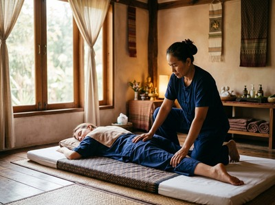

Govanhill is one of Glasgow's most distinctive and densely populated neighbourhoods, sitting about one mile south of the city centre between Queen's Park, the Gorbals, and Pollokshields.
For anyone looking for thai massage in Govanhill, Serendipity Massage Therapy & Wellness on Hope Street is an easy journey north and a genuine alternative to the chain spa experience. The area is home to around 18,000 people and is widely recognised as Scotland's most ethnically diverse neighbourhood. Victoria Road and the surrounding streets are lined with independent shops, cafés, and a strong sense of community life.
Govanhill draws a broad mix of residents: young professionals, families, creatives, and long-established community members. Many commute daily to the city centre or nearby employment hubs. That routine builds up tension quietly — desk posture, standing work, and the journey itself all take a toll on the neck, shoulders, and lower back.
A regular therapeutic massage gives that tension somewhere to go. Not as a treat, but as a practical response to what the working week does to the body.

Serendipity brings thai massage to Govanhill residents through a short, direct connection to Glasgow City Centre. The studio sits at Central Chambers on Hope Street, right in the heart of the city's professional district. It is easy to reach on any of the frequent bus services running north along Victoria Road. You can book your session online and be in the treatment room within the hour.
Serendipity offers a full range of therapeutic and relaxation treatments. Every session is delivered by a trained team using techniques developed by head therapist Jariya Malone. There is a treatment matched to what your body needs — whether you are managing chronic muscle tension, recovering from sport, or carrying a week's worth of stress.
The easiest route from Govanhill to Serendipity is by bus along Victoria Road heading north. The 4, 4A, 5, and 6 services all run from stops along Victoria Road and Queen's Drive into the city centre. The journey takes around 15 to 20 minutes, and Hope Street is a short walk from where these routes arrive.
If you prefer the subway, the nearest Clockwork Orange station is Bridge Street on the Outer Circle. It is reachable in a few minutes by bus or on foot from the Govanhill side of the Gorbals. From Bridge Street, it is one stop to St Enoch — and Serendipity on Hope Street is about a ten-minute walk from there.
Serendipity is not a chain and not a sole trader. Every therapist in the team is trained to a consistent standard using techniques developed by Jariya Malone. The quality of your session does not depend on who is available on the day.
That consistency matters — especially if you are coming in regularly to manage something ongoing, like back pain, neck stiffness, or stress-related tension that does not clear up on its own.
If you are new to massage therapy or unsure which treatment to book, get in touch when you book and the team will help you find the right starting point.
Govanhill has a quietly resilient character, shaped by over a century of migration and community life. It was one of the few inner Glasgow neighbourhoods to survive the city's 1960s demolition programme intact — which is why the area still has its original Victorian tenement streetscape. For more on the area's history, see Govanhill on Wikipedia.
Govanhill is roughly one mile south of Glasgow city centre, making it one of the closer southside neighbourhoods to Hope Street. By bus along Victoria Road, the journey typically takes around 15 to 20 minutes. It is a manageable trip at any time of day, including during a lunch break or after work.
The number 4, 4A, 5, and 6 bus services run north from Victoria Road and Queen's Drive into the city centre, stopping close to Hope Street. Alternatively, you can take a short bus or walk to Bridge Street subway station and travel one stop to St Enoch on the Outer Circle. From St Enoch, Serendipity at Central Chambers on Hope Street is around a ten-minute walk.
Same-day availability depends on the day and which therapist is in, but it is worth checking online. The quickest way is to visit the booking page and see what slots are showing for today. If you have a preferred treatment or therapist, booking a day or two ahead gives you more choice.
For desk workers dealing with neck pain, shoulder tension, or lower back stiffness, Traditional Thai Massage is a strong choice. It works across the whole body using assisted stretching and acupressure, releasing tension that builds up from sustained posture or repetitive movement. For physically demanding work or sports recovery, a Thai Deep Tissue Oil Massage or Thai Oil Massage with deeper pressure may be more effective. The team at Serendipity can advise when you book.
Serendipity Massage Therapy & Wellness is located at Floor 1, Suite 50, Central Chambers, 93 Hope Street, Glasgow G2 6LD. For current opening hours and to check availability, the best approach is to visit serendipitymassage.co.uk or call 0141 673 6630. The studio is in the heart of Glasgow's city centre, making it accessible from Govanhill at almost any time of day.